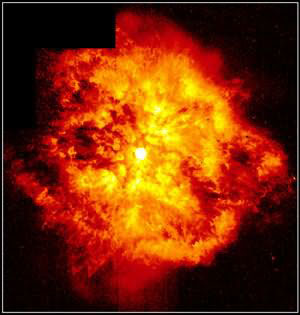

Credit: Yves Grosdidier, Anthony Moffat, Gilles Joncas, Agnes Acker and NASA
Massive stars which are at an advanced stage of stellar evolution and losing mass at a very high rate are known as Wolf-Rayet stars. With masses typically greater than 25 times that of the Sun, they have brief lifetimes and are therefore quite rare objects. We know of about 220 in our own Galaxy, but astronomers have estimated that the Milky Way may contain between 1,000 and 2,000 such objects, the majority hidden by dust.
Given that the average temperature of a Wolf-Rayet star is greater than 25,000 Kelvin, and they can have luminosities of up to a million times that of the Sun, it is thought that the powerful winds emitted by these objects are driven by intense radiation pressure. These winds eject about 10 solar masses of material per million years at speeds of up to 3,000 km/s, resulting in the characteristic broad emission lines in the spectra of these stars (normal stars have narrow emission lines).
Thought to descend from O stars that have lost their hydrogen envelopes to reveal an exposed helium core, Wolf-Rayet stars can be subclassified into 2 main types. The spectra of WN stars are dominated by helium and nitrogen emission lines, but can contain some carbon, while WC stars show no nitrogen and are dominated by helium, carbon and oxygen emission lines.
It is estimated that about 50% of Wolf-Rayet stars occur in binary systems. Proposed companions are another Wolf-Rayet star, or a compact companion such as a black hole or neutron star. There is some evidence for both of these scenarios, but conclusive observations have yet to be obtained. The only confirmed companions to Wolf-Rayet stars have so far been other massive stars.
Wolf- Rayet stars are thought to end their lives spectacularly as either a Type Ib or Type Ic supernova explosion.
See also: black hole.